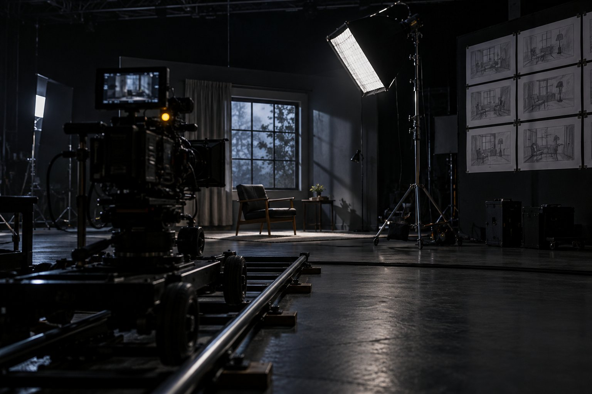
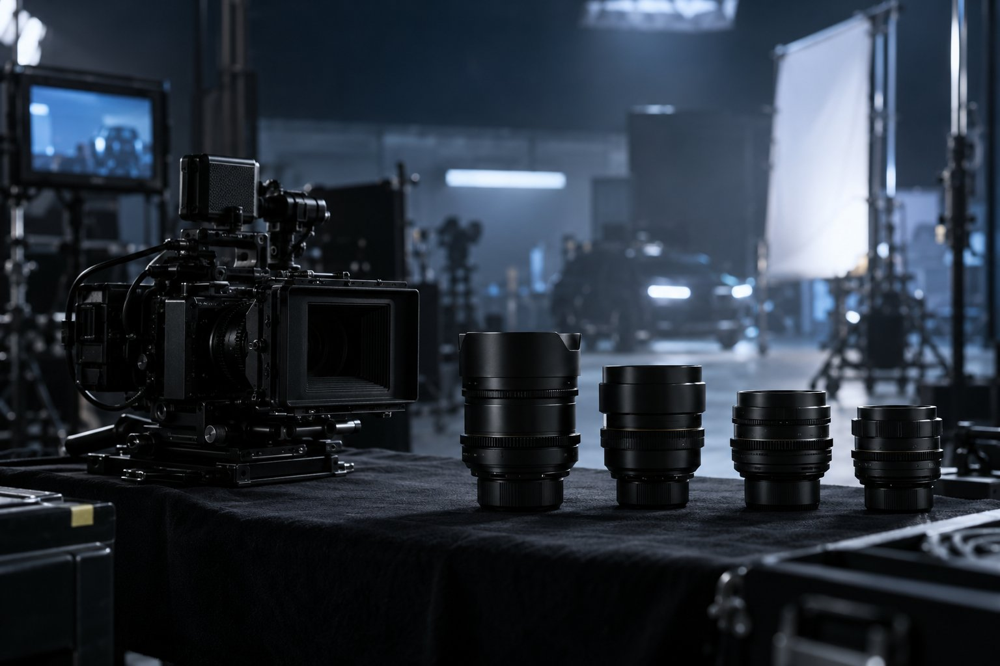
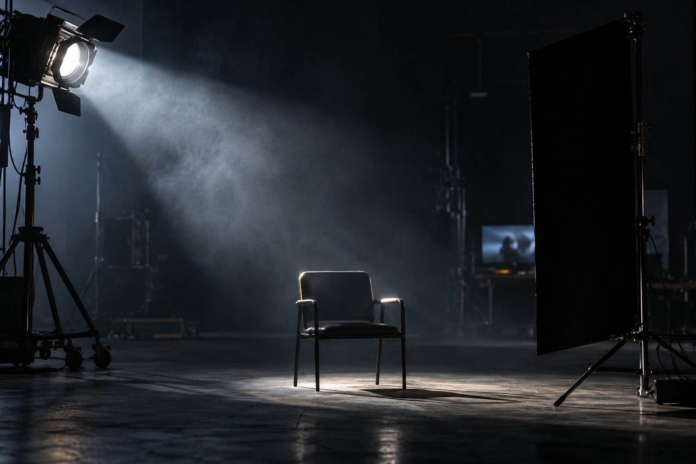
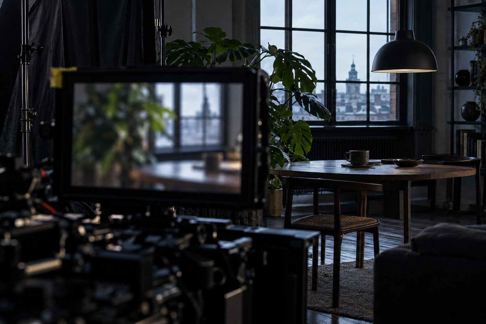
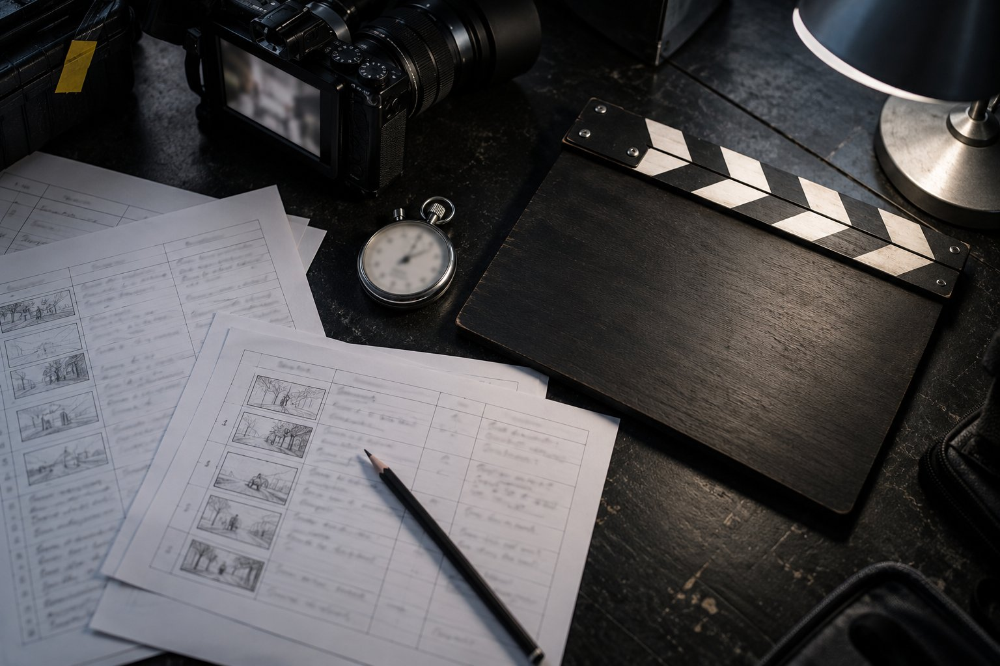

Formação Cinema com IA · curso 0 de 6 · 8 aulas
Direção: pense como diretor antes de gerar qualquer coisa
O gerador executa; quem decide é você. Plano, ângulo, movimento, luz, composição, ficha do personagem e decupagem com som. Cada aula termina num arquivo que a própria página confere, sem terminal e sem gastar crédito. No fim, uma cena de 30 segundos pronta para virar prompt em qualquer gerador.

- 8aulas
- 8arquivos conferidos na página
- 0crédito gasto
- 6cursos na formação
As aulas
Uma cena atravessa o curso: "A primeira fornada". Cada aula acrescenta uma camada de direção a ela, e você faz o mesmo com a sua.
- Aula 1 · 15 minO diretor e a máquina: o que a IA faz e o que continua sendo seuO gerador de vídeo de 2026 cria imagem, movimento e som. Ele não sabe o que o público deve sentir nem por que a câmera está ali. Esta aula separa o que a máquina executa do que você decide e fecha com o cartão do diretor da sua cena.

Aula 2 · 16 minPlano, ângulo e distância: a gramática que todo gerador entendeTamanho de plano e ângulo não são estética: decidem o que o público vê e como se sente em relação ao personagem. É também a parte do vocabulário que os geradores de vídeo entendem melhor. Você sai com a escada de planos da sua cena escrita nos termos que o prompt usa. Aula 3 · 16 minA câmera como verbo: cada movimento conta uma coisaMovimento de câmera é o que mais pesa no resultado de um vídeo gerado, e o erro mais comum é empilhar movimentos no mesmo plano. Nesta aula cada movimento ganha uma função: aproximar, afastar, acompanhar, revelar, girar ou tremer. Um por plano, escolhido pelo efeito no público.
Aula 3 · 16 minA câmera como verbo: cada movimento conta uma coisaMovimento de câmera é o que mais pesa no resultado de um vídeo gerado, e o erro mais comum é empilhar movimentos no mesmo plano. Nesta aula cada movimento ganha uma função: aproximar, afastar, acompanhar, revelar, girar ou tremer. Um por plano, escolhido pelo efeito no público.
Aula 4 · 16 minLuz, cor e atmosfera: o look decidido antes do prompt"Luz cinematográfica" no prompt não diz nada: o gerador precisa saber de onde a luz vem, de que lado bate, se é dura ou suave e que cor tem. Nesta aula você decide a luz da sua cena e escreve o cartão de look, o trecho fixo que vai em todo prompt dela.
Aula 5 · 15 minComposição e profundidade no quadroUm quadro bonito em que o olho não sabe para onde ir não comunica nada. Composição é decidir o que se vê primeiro, onde o vazio trabalha a favor e como frente, meio e fundo se separam. É o que faz uma imagem gerada parecer espaço de verdade, e não um cenário chapado. Aula 6 · 17 minPersonagem, figurino e ambiente: a ficha que segura a consistênciaO erro que mais denuncia vídeo gerado é o personagem que muda de rosto, de roupa ou de cabelo entre um plano e outro. A defesa é uma ficha escrita e um pacote de imagens de referência, decididos antes da primeira geração e repetidos em todos os planos.
Aula 6 · 17 minPersonagem, figurino e ambiente: a ficha que segura a consistênciaO erro que mais denuncia vídeo gerado é o personagem que muda de rosto, de roupa ou de cabelo entre um plano e outro. A defesa é uma ficha escrita e um pacote de imagens de referência, decididos antes da primeira geração e repetidos em todos os planos.
Aula 7 · 18 minDo roteiro à decupagem: lista de planos com som e falaDecupar é cortar a cena escrita em planos numerados, cada um com câmera, tempo e som. Em 2026 o som entrou na lista: os geradores de vídeo devolvem o áudio junto com a imagem, então o que se ouve em cada plano também é decisão de direção. Aula 8 · 20 minSeu storyboard: uma cena de 30 s decupada e conferidaHora de juntar tudo: o cartão do diretor, a ficha, o look e a decupagem viram um storyboard de 30 segundos, conferido pela página. É o pacote que você leva para qualquer gerador, e é por ele que o curso 1 começa.
Aula 8 · 20 minSeu storyboard: uma cena de 30 s decupada e conferidaHora de juntar tudo: o cartão do diretor, a ficha, o look e a decupagem viram um storyboard de 30 segundos, conferido pela página. É o pacote que você leva para qualquer gerador, e é por ele que o curso 1 começa.
Para quem é
- 1Criadores, professores e quem faz vídeo para empresa.
- 2Quem já gerou imagem ou vídeo com IA e achou o resultado aleatório.
- 3Quem não usa terminal: tudo se faz no navegador e num arquivo de texto.
O que você sai fazendo
- 1Decidir plano, ângulo, movimento e luz pelo que o público deve sentir.
- 2Escrever a ficha que segura o mesmo personagem em todos os planos.
- 3Entregar um storyboard de 30 s com som por plano, conferido pela página.
- 4Levar o pacote para qualquer gerador, sem depender de uma plataforma.
A formação (6 cursos)
- 10 · Direção (este curso)
- 21 · Geração: imagem e vídeo com IA
- 32 · Produção: do roteiro ao filme pronto
- 43 · Motion por código com agente
- 54 · A fábrica de vídeo com agentes
- 65 · Sites cinematográficos